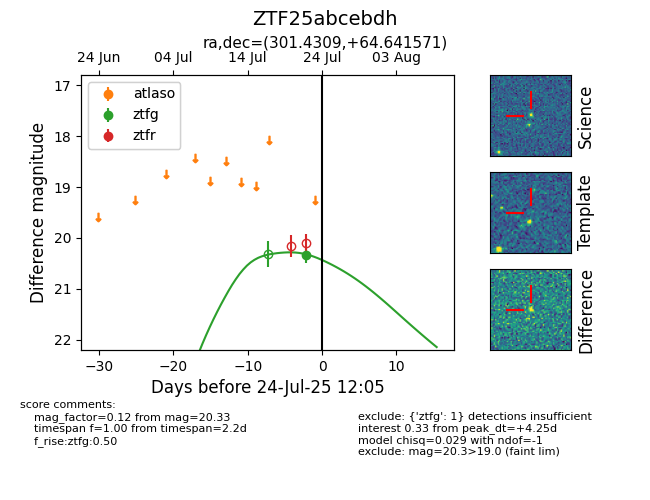

Target ZTF25abcebdh at 2025-07-24 12:05, see:
FINK: fink-portal.org/ZTF25abcebdh
Lasair: lasair-ztf.lsst.ac.uk/objects/ZTF25abcebdh
ALeRCE: alerce.online/object/ZTF25abcebdh
alt names
ZTF25abcebdh (ztf,fink)
coordinates:
equatorial (ra, dec) = (301.4309,+64.64157)
galactic (l, b) = (97.8258,+16.89705)
photometry
last ztfg=20.33
1 ztfg detections
